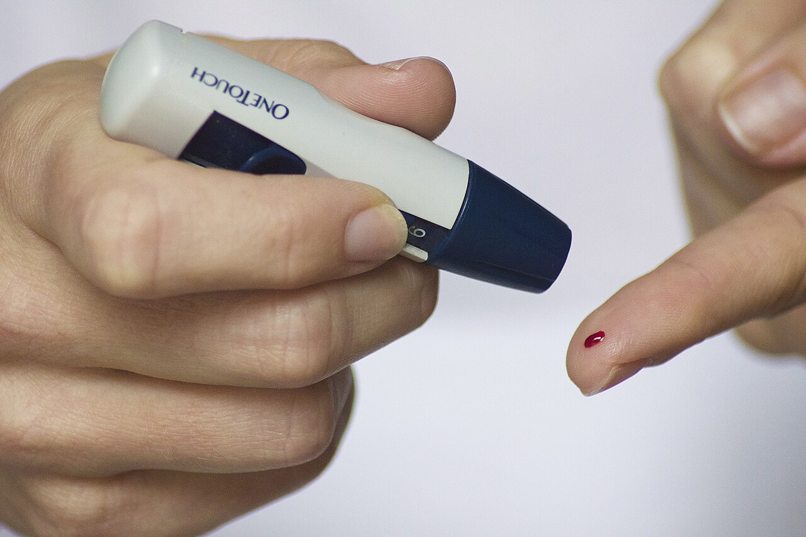

Vết bầm tím như thế nào là dấu hiệu của ung thư máu? 5 điều cần biết
Vết bầm tím như thế nào là dấu hiệu của ung thư máu? 5 điều cần biết: phần lớn vết bầm là lành tính và tự mờ đi. Nhưng vết bầm tự xuất hiện không rõ nguyên nhân, to, lan rộng, có ở nhiều vị trí hoặc đi kèm dấu hiệu khác thì nên đi khám — một triệu chứng đơn lẻ không bao giờ có nghĩa là ung thư máu.
Một buổi sáng, bạn thức dậy và thấy vết bầm trên cánh tay dù không nhớ mình va vào đâu — không ngã, không bị đập trúng. Lo thì có lo, nhưng một vết bầm chưa đủ để kết luận nguyên nhân. Tuần này nhiều người bàn luận về chủ đề này sau khi YouTuber Hậu Hoàng chia sẻ hình ảnh nhiều vết bầm trên tay và chân trong lúc nằm viện điều trị ung thư máu.
Cảnh báo an toàn
Bài viết chỉ cung cấp thông tin chung, không thay thế lời khuyên hay chẩn đoán y tế — không tự chẩn đoán từ một triệu chứng. Dấu hiệu kéo dài thì đi khám. Cấp cứu ngay khi khó thở nặng đột ngột, lú lẫn, thay đổi thị lực đột ngột hoặc co giật.
1. Vết bầm nào bình thường, vết bầm nào cần chú ý?
Vết bầm thông thường xuất hiện sau cú va hoặc ngã rõ ràng, ở cẳng chân, đầu gối, khuỷu tay, và mờ dần trong một đến hai tuần.
Cần chú ý nếu vết bầm tự xuất hiện không rõ nguyên nhân, to lên, lan rộng, có ở nhiều chỗ hoặc nằm tại vùng ít va chạm như cổ, ngực, lưng. Vết bầm tái đi tái lại, lâu mờ hoặc tăng về số lượng cũng nên kiểm tra.
BS.CKI Ninh Công Vi, Phó giám đốc Trung tâm Ung bướu, Xạ trị và Y học hạt nhân Quốc tế Phương Đông, lưu ý tình trạng bầm tự phát, lan rộng hoặc xuất hiện ở vùng ít va chạm.
2. Những dấu hiệu cảnh báo đi kèm
Vết bầm cần quan tâm hơn nếu đi cùng chấm đỏ li ti dưới da không nhạt màu khi ấn, chảy máu nướu hoặc chảy máu cam. Các dấu hiệu khác có thể gồm mệt mỏi kéo dài, sốt không rõ nguyên nhân, nhiễm trùng lặp lại, đổ mồ hôi đêm, da nhợt, hụt hơi khi gắng sức, đau xương, hạch sưng và sụt cân không chủ ý.
Bệnh viện Hồng Ngọc lưu ý không thể xác định nguyên nhân chỉ bằng màu sắc, kích thước hay ảnh chụp vết bầm. Hạch sưng cần kiểm tra nếu cứ lớn dần, nhất là khi kèm sốt, sụt cân hoặc đổ mồ hôi đêm nhiều — các dấu hiệu này không đặc hiệu, cũng xuất hiện trong nhiều bệnh khác.
Vì vậy, thấy một dấu hiệu thì chưa vội nghĩ đến ung thư máu — theo dõi diễn biến và đi khám khi có biểu hiện bất thường.
3. Vì sao ung thư máu có thể gây bầm tím?
Tủy xương là nơi tạo ra các tế bào máu. Trong một số dạng ung thư máu, tủy tạo quá nhiều bạch cầu bất thường, lấn át quá trình tạo máu bình thường.
Khi tiểu cầu giảm, máu khó cầm hơn vì tiểu cầu tham gia quá trình đông máu — người bệnh dễ bầm tím hoặc chảy máu. Hồng cầu giảm khiến cơ thể mệt mỏi, da nhợt nhạt; tế bào miễn dịch giảm hoặc hoạt động bất thường khiến nhiễm trùng lặp lại.
Ung thư máu là nhóm bệnh xuất phát từ tế bào gốc tạo máu trong tủy xương hoặc mô lympho, gồm dạng cấp tính và mạn tính. Bệnh không lây từ người này sang người khác.
4. Bầm tím còn có thể do nhiều nguyên nhân khác
Bầm tím không đồng nghĩa với ung thư máu. Nguyên nhân có thể là va chạm nhẹ; thuốc chống đông, aspirin, thuốc chống viêm không steroid hoặc steroid dùng dài ngày; rối loạn tiểu cầu hay đông máu; bệnh gan; thiếu vitamin C hoặc K. Ở người lớn tuổi, da mỏng hơn cũng khiến vết bầm dễ xuất hiện.
Nếu đang dùng thuốc kê đơn, không tự ý ngừng thuốc khi thấy bầm tím, cũng không tự dùng vitamin liều cao khi chưa có hướng dẫn y tế — trao đổi với bác sĩ để tìm nguyên nhân và cách xử trí phù hợp.
5. Khi nào nên đi khám và bác sĩ sẽ làm gì?
Hãy đi khám nếu vết bầm xuất hiện thường xuyên, tăng về số lượng hoặc kích thước mà không rõ nguyên nhân, nhất là khi kèm chấm đỏ li ti, chảy máu cam, chảy máu nướu, mệt mỏi hoặc sụt cân.
Theo BSCKII Lâm Quốc Trung, Phó Trưởng khoa Hóa trị ung thư, Bệnh viện Đại học Y Dược TP.HCM, bác sĩ thường bắt đầu bằng xét nghiệm máu tổng quát. Nếu tiểu cầu hay hồng cầu thấp, hoặc tế bào máu có hình dạng bất thường, bác sĩ có thể chỉ định thêm xét nghiệm, trong đó có xét nghiệm tủy xương. Được chỉ định kiểm tra không có nghĩa đã mắc ung thư máu.
Phát hiện sớm và chẩn đoán đúng giúp cải thiện tiên lượng — còn tùy loại bệnh, tuổi, đột biến gen và đáp ứng điều trị ban đầu.
BS.CKI Ninh Công Vi cho biết điều trị nhắm trúng đích đã cải thiện kết quả ở một số nhóm bệnh — người mắc bạch cầu cấp dòng lympho hay bạch cầu mạn dòng tủy có thể đạt thời gian lui bệnh dài.

Giới hạn cần nhớ
Các dấu hiệu trong bài đều không đặc hiệu — mệt mỏi, sốt, sụt cân hay bầm tím đều xuất hiện trong nhiều bệnh khác, nên một triệu chứng đơn lẻ không đủ để kết luận ung thư máu. Chỉ bác sĩ mới xác định được nguyên nhân qua thăm khám và xét nghiệm. Không có cách phòng ngừa tuyệt đối, nhưng bỏ thuốc lá, tránh tiếp xúc lâu với hóa chất độc hại, thuốc trừ sâu và tia xạ, đeo đồ bảo hộ khi làm việc giúp giảm phần nào nguy cơ.
Kết lại: hãy nhớ năm điểm: đa số vết bầm sau va chạm là lành tính; vết bầm tự phát, to, lan rộng hoặc tái diễn cần chú ý; chấm đỏ, chảy máu bất thường, mệt mỏi hay sốt kéo dài cần được đánh giá; bầm tím còn nhiều nguyên nhân khác ngoài ung thư máu; và chỉ bác sĩ mới xác định được nguyên nhân. Bình tĩnh theo dõi và đi khám đúng lúc.
- Muốn bài viết có thêm người hỏi mua? Xem các gói tăng tương tác tại viettuongtac.com.
- Cần một website bán hàng để khách xem mẫu và đặt hàng dễ hơn? Xem mẫu tại webkhoinguon.com.

💬 Bình luận
Đang tải bình luận…